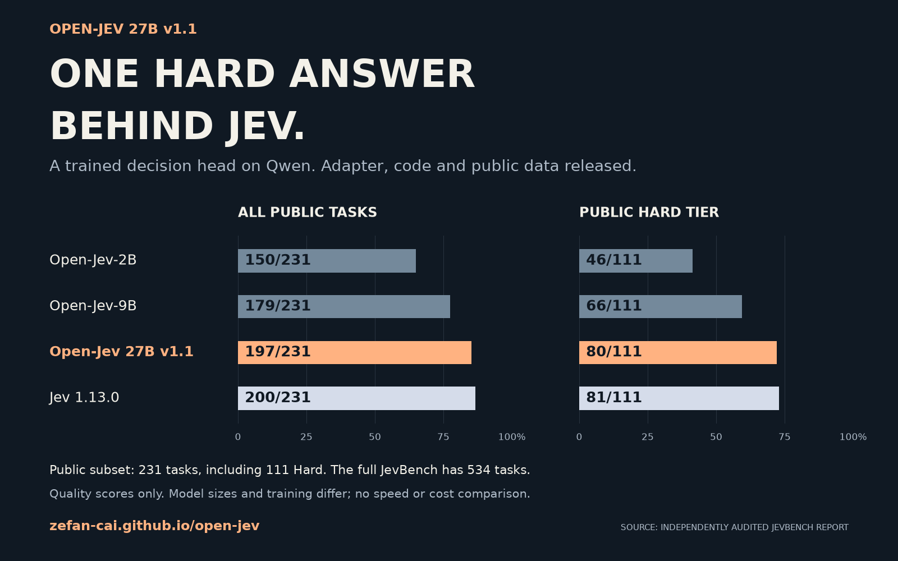

Open-Jev-27B
v1.1
Give it context and options.
Get typed probabilities for the next decision.
One Hard answer behind Jev (81/111). Public 231-task subset of 534; Jev leads overall 200/231.
LoRA rank 8 + decision head over a fixed Qwen3.8-27B base. Adapter package; base weights required.
Same preview.
Different target.
A changed target. Two actual model predictions.
One answer from Jev
on public Hard.
Open-Jev-27B-v1.1 reaches 72.07% on the 111 public Hard tasks. Open-Jev-2B scores 46/111; Open-Jev-9B scores 66/111; Jev scores 81/111.
Selected external benchmark, separate from the complete 127,787-row internal evaluation. Model scale, data and earlier training differ.
See results and release details ↗
Turn a column of text into useful categories.
Sort support messages, emails, or feedback using categories you define. No code needed in the workbench.
Powered by Open-Jev-2B on CPU. Start with a few rows.
- 1Add text or CSVPaste or import
- 2Define categoriesDescribe each label
- 3Classify each rowRun your task
- 4Export resultsSave a CSV
Your move.
Then the model's.
Read the board, choose an action, then reveal the model's choice and every option's probability.
Enter the game arcade16 independent recorded decisions, including 3 model/reference disagreements. Interactive snapshots, not live model gameplay. Original synthetic game states; no third-party game assets.
Watch complete games.
Selected successful episodes, from the opening state to the goal. Replayed actions from the original Qwen3.5-9B pilot.
A growing set of
inspectable decision tasks.
Prepared corpus inventory, including new retrieval and multilingual mailroom controls. This prepared inventory is separate from the frozen v1.1 mixture. Original 2B/9B results use release-v2; the 27B v1.1 results below use its complete expanded holdouts. Selected API probes are reported separately.
A small vocabulary.
A useful way to think.
Choose an action. Test a condition. Score a criterion. Ask independent questions over the same context, with outputs you can use directly.
{
"state": "My order arrived damaged. Please refund it.",
"questions": {
"route": {
"type": "choice",
"instructions": "Which team should handle this?",
"criteria": {
"billing": "Refunds and charges",
"engineering": "Software defects"
}
}
}
}The candidates are yours. The model assigns probabilities; your application decides what to do next.
Direct probability decisions, without autoregressive text generation or parsing generated JSON. Independent implementation inspired by Jev; no claim to reproduce its proprietary method or speedups.
Decisions in motion.
Browse the selected demos across our task categories. Successful examples and interface walkthroughs; see Results for the full evaluation.
Loading demo catalog…
No matching decisions.
Try another task name or category.
These clips make the interface inspectable. A replay of one response is not an end-to-end success rate; an interface walkthrough is not a model capability result.
Coverage still in progress
How fast is 2B?
Measured requests from the Open-Jev-2B checkpoint. Inspect the workload, timing boundary and every raw attempt.
Loading the latency report…
All providers receive the same saved state and question semantics. The 2B numbers use a warm H100 with cache off and loopback HTTP. Hosted APIs use a fresh HTTPS connection per request, including Internet transit, TLS, routing and scheduling. These are client-observed request times, not a matched-hardware model speedup.
Swipe the table horizontally to compare providers →
Local timing boundaries and experimental cache diagnostics
| Workload | State tokens | Candidates | Cache off | Experimental cache | Validation |
|---|
For context, TypeSafe's launch article ↗ reports 70–500 ms end-to-end for Jev. That vendor range uses unspecified workloads and is separate from our measurements above.
Watch a measured request.
One recorded model response and the full timing distribution for that workload. Playback length is presentation time; the measured request time is printed on screen.
Exact request and recorded response
Quality, beside latency.
Compare categorical answers with fixed reference labels. Inspect the evidence and label limitations behind each result.
Coverage is a sample. These selected suites do not cover the full held-out inventory. Snapshot decisions are not closed-loop task or game win rates.
The same 76 cases are the direct comparison. The 2B and 9B results reuse historical predictions verified against exact row and checkpoint hashes. They add no new latency measurements. Hosted model results use new requests.
Loading the decision comparison…
Reference matches / evaluated hard-target decisions. Soft targets stay outside this count. Failed decisions count as mismatches; unattempted decisions remain pending. Ambiguous game references are disclosed in the method.
Swipe horizontally to compare all five providers →
* A probability-mass flag means the categorical answer was usable even though its probability vector failed strict validation. This table counts that answer separately as a decision; it does not validate or renormalize the probabilities.
Suite definitions and decision policy
Retrieval on TREC-DL
JevBench, public subset.
Audited 27B v1.1 and Open-Jev-2B / Open-Jev-9B checkpoints, alongside Jev and GPT. Separate from the 76-case comparison above.
231 public tasks, out of 534 total. Original: 72 · Easy: 48 · Hard: 111. The other 303 private/judge tasks are unavailable; no full-benchmark score is claimed.
Candidate order differs on 119 of 139 Choice tasks. The native adapters preserve criteria-map order; the GPT adapter uses its task-label order. Open-Jev and Jev return native probabilities; GPT returns verbalized probabilities in constrained JSON, not token logprobs.
Timing is diagnostic. One observation per task, no warmups or retries. The Open-Jev-2B / Open-Jev-9B use one local H100 with loopback HTTP and prefix cache off; hosted models use HTTPS. The new 27B uses four-rank direct execution and its timings are not comparable. These heterogeneous quality requests do not establish a hardware-normalized speedup, throughput, or energy efficiency.
Loading the JevBench audit status…
Swipe horizontally to inspect all metrics →
| Model | Correct · Accuracy | Hard · Accuracy | Strict valid | Renormalized | P50 | P95 |
|---|
Strict probability-sum tolerance: 0.001. Vectors within the upstream 0.02 rounding tolerance may be normalized and scored. Score accuracy uses the most probable level; expected-value ordinal MAE is separate. Local compute cost is unmetered, not free.
Results by public tier and execution settings
| Model | Original | Easy | Hard |
|---|
Open-Jev-2B / Open-Jev-9B: one NVIDIA H100 80GB HBM3, models run serially. New 27B: four-rank frozen-base FSDP2 on shared H100 GPUs, direct collective execution without HTTP. All Open-Jev models: candidate batch size 1, maximum length 16,384, prefix cache off. All streams: concurrency 1, no warmups, no retries. GPT-5.6 Luna: reasoning none. GPT-6 Astra: reasoning low. Both GPT models: maximum 4,096 completion tokens and temperature omitted.
27B v1.1 scores 197/231 (85.28%) and 80/111 Hard (72.07%), above Open-Jev-2B / Open-Jev-9B and still three overall and one Hard answer behind Jev. Model scale, data and prior training all differ. ¹ Its four-rank shared-node execution times are not single-GPU or HTTP/API latency measurements; no speedup is claimed.
Show the work.
Keep the limits.
27B v1.1 completed all 127,787 expanded Test/OOD rows. Independent replay verified zero failed, missing or duplicate predictions, model identity and complete process cleanup.
Read the complete evaluation reportKeep checkpoint versions separate.
The original Open-Jev-2B / Open-Jev-9B results are preserved. New 2B training stopped; new 9B did not start. Final-model JF100 and closed-loop results remain pending.
| Checkpoint | Old Test | Old OOD | Expanded Test | Expanded OOD |
|---|---|---|---|---|
| Open-JevOpen-Jev-2B | 94.71%9,515 / 10,046 | 86.02%13,287 / 15,446 | Not evaluated | Not evaluated |
| Open-JevOpen-Jev-9B | 97.54%9,799 / 10,046 | 91.97%14,205 / 15,446 | Not evaluated | Not evaluated |
| Open-Jev27B v1.1 | 98.31%9,876 / 10,046 | 95.98%14,825 / 15,446 | 96.65%41,357 / 42,789 | 96.44%80,934 / 83,924 |
Old Test / OOD: 10,532 / 15,920 total rows.
Expanded Test / OOD: 43,301 / 84,486 total rows.
Soft-target rows (486 / 474 / 512 / 562 respectively) remain in probability metrics. The old panels are unchanged-content subsets of the expanded panels; they overlap. The original 2B/9B checkpoints have not been evaluated on the expanded splits.
These are matches to prepared reference labels, not gameplay or workflow completion rates. No matching full-data base-model evaluation was run. Source-defined OOD does not establish unrestricted real-world generalization.
Historical subgroup results remain available: Open-Jev-9B Wiki OOD expected accuracy is 32.74%, and reasoning OOD hard accuracy is 73.60%. T-Rex Test has only four rows. See the original 2B/9B audit and the downloaded source-level metrics.
27B uses its saved temperature, a 4,096-token limit without truncation, row batch size one and cache off. JevBench is the separate 231-task external evaluation above. Shared multi-GPU times are not single-GPU or HTTP/API latency.
Download verified resultsBuild a smaller
decision loop.
Inspect the contracts, follow the evidence, and make the next choice explicit.
Model packages require their pinned upstream Qwen base weights. The v1.1 dataset is a redistributable projection (326,619 rows / 147,139 training rows), excluding 2,053 Wiki rows from the original 328,672-row mixture. Dataset cards retain source licenses and reconstruction limits.